인쇄기사 (2020-06-06 기출문제)
1과목: 인쇄공학
1. 다음 중 금속판에 대한 기름방울의 접촉각이 가장 큰 것은?(단, 판 재질은 처리하지 않은 금속면일 경우이다.)
- 은
- 아연
- 구리
- 크롬
(정답률: 62%)

2. 다음 ( )안에 들어갈 알맞은 용어는?
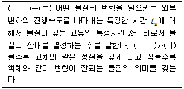
- 잉크 택(tack)값
- 정상상태(steady state)
- 데보라 수(Deborah number)
- 탄성계수(conefficient of elasticity)
(정답률: 62%)
3. 연속계조를 망점에 의한 계조로 나타내는 인쇄를 무엇이라 하는가?
- 교정 인쇄
- 하프톤 인쇄
- 플렉소 인쇄
- 프로세스 인쇄
(정답률: 65%)
4. 정전기로 인한 인쇄트러블이 아닌 것은?
- 급지 불량 현상
- 종이가 뜯기는 현상
- 종이가 서로 붙는 현상
- 지분이 롤러에 붙는 현상
(정답률: 73%)
5. 다음에서 설명하는 제책방식은?
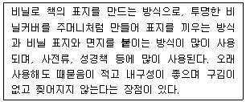
- 고주파 제책
- 트윈링 제책
- 아지로 제책
- 스프링 제책
(정답률: 48%)
6. 오랫동안 보관했던 잉크와 곧바로 제조된 잉크의 인쇄기상에서의 유동성이 차이나는 원인으로 볼 수 없는 것은?
- 경시변화 현상
- 틱소트로피 현상
- 잉크의 트래핑 문제 발생
- 안료와 비이클의 삼차원적 구조 형성
(정답률: 44%)
7. 인쇄사고 중 히키(hicky)의 대책방법으로 옳지 않은 것은?
- 롤러의 접촉폭을 조정한다.
- 롤러표면의 지분을 제거한다.
- 고점도의 인쇄잉크로 교체한다.
- 건조 피막이나 찌꺼기가 잉크집에 들어가지 않도록 관리한다.
(정답률: 59%)
8. 인쇄 잉크 전이 시 발생하는 택(tack)과 관련된 이론이 아닌 것은?
- 열화설
- 공동설
- 중간설
- 점탄성설
(정답률: 53%)
9. 유체의 저항성 중 흐름(flow)에 대한 액체의 저항성은?
- 점성
- 탄성
- 소성
- 점탄성
(정답률: 59%)
10. 잉크가 롤러 사이로 전이될 때 잉크 입자가 안개처럼 공기 중으로 비산되어 인쇄기계와 작업 환경을 오염 시키는 미스팅(misting)현상의 방지 대책으로 옳지 않은 것은?
- 비이클의 탄성력이 큰 잉크를 사용한다.
- 농도가 낮은 잉크를 사용하여 잉크의 공급량을 늘린다.
- 인쇄속도나 잉크롤러의 접촉압력을 낮추어 잉크의 유동성을 줄인다.
- 인쇄기의 냉각장치나 인쇄실의 온도 조절장치를 사용하여 잉크의 온도를 적절하게 유지한다.
(정답률: 44%)
11. 다음 중 오프셋 인쇄에서 습수의 계면장력에 의해 생기는 모틀은?
- Gross mottle
- Density mottle
- BTM(back trap mottle)
- WIM(water interference mottle)
(정답률: 56%)
12. 다음 ( )안에 들어갈 알맞은 것은?
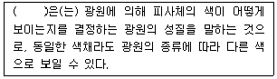
- 히키(hicky)
- 연색성(color rendering)
- 메타메리즘(metamerism)
- 포토크로미즘(photochromism)
(정답률: 62%)
13. 접착제를 인쇄표면에 도포한 후 일단 건조하여 용제를 증발시킨 다음에 접합할 필름을 압착시키는 라미네이션 방식은?
- 왁스 라미네이션(wax lamination)
- 습식 라미네이션(wet lamination)
- 건식 라미네이션(dry lamination)
- 핫멜트라미네이션(hot melt lamination)
(정답률: 50%)
14. 인쇄공장의 온,습도 관리방식으로 옳은 것은?
- 빛이 잘 들도록 남쪽으로 창을 낸다.
- 공조기의 송풍방향을 습수롤러에 맞춘다.
- 종이 저장창고의 온,습도는 인쇄실보다 낮게 유지한다.
- 공장 내의 발열물(모터나 컴프레셔 등)은 실외에 설치한다.
(정답률: 53%)
15. 물, 에틸알코올, IPA, 글리세린의 표면장력을 큰 순서부터 작은 순으로 올바르게 나열한 것은?
- 물 - 글리세린 - 에틸알코올 - IPA
- 물 - 에틸알코올 - 글리세린 - IPA
- 글리세린 - 물 - IPA - 에틸알코올
- 글리세린 - IPA - 물 - 에틸알코올
(정답률: 53%)
16. 인쇄조건 중 잉크의 전이현상에 영향을 주는 요소와 결과에 대한 설명으로 옳지 않은 것은?
- 점도 : 전이율과 반비례 관계이다.
- 인쇄속도 : 속도가 증가하면 전이계수는 증가한다.
- 온,습도 : 실내의 온도와 습도는 잉크의 점도에 영향을 준다.
- 인쇄압력 : 인쇄압력의 상승에 따라 전이율은 상승한다.
(정답률: 56%)
17. 다색인쇄 시 제1색 잉크농도가 1.22, 제2색 인쇄 농도가 1.41이고, 제 1색 위에 제2색을 중첩인쇄한 후의 농도가 1.92일 때 트래핑(%)은?
- 39.9
- 41.8
- 49.6
- 51.5
(정답률: 63%)
18. 인쇄잉크가 다공성의 피인쇄체로 전이될 경우 인쇄 압력에 의한 투묘효과(anchor effects)로 발생하는 인쇄사고는?
- Slur
- Tinting
- Set off
- Rub off
(정답률: 59%)
19. 잉크가 일정한 외력(stress)를 받아 유동을 시작한다면 유동을 시작하는 시점을 외력을 무엇이라 하는가?
- 유동성(liquidity)
- 요변성(thixotropy)
- 항복가(yield value)
- 점탄성(viscoelasticity)
(정답률: 59%)
20. 프로세스 잉크와 관련된 내용으로 옳은 것은?
- cyan잉크의 농도가 가장 높다.
- yellow잉크에는 소량의 magenta성분이 함유되어 있다.
- magenta 잉크의 농도가 가장 낮은 것이 일반적이다.
- 전 세계적으로 인쇄농도는 ISO규정에 따라 동일하게 관리한다.
(정답률: 50%)
2과목: 인쇄재료학
21. 비이클과 섞으면 반투명의 덩어리가 되므로 보조제나 미디움으로 사용되는 안료는?
- 티탄백
- 탄산칼슘
- 카본블랙
- 레이크 레드C
(정답률: 53%)
22. 이온화 경향이 크고, 수분과 화학 약품과의 반응성이 풍부하나, 표면에 형성된 강인한 피막 때문에 내식성이 높은 금속판재는?
- 아연
- 구리
- 알루미늄
- 크롬
(정답률: 45%)
23. 용지의 생산 시 상대 습도과 과다하게 높거나 낮은 종이는 용지의 치수 안정성을 저하시킨다. 이러한 조건의 용지로 인쇄했을 때 나타날 수 있는 가장 큰 문제점은?
- 가늠 맞춤 불량
- 인쇄광택의 감소
- 잉크 흡수량 증가
- 인쇄 속도의 과도한 증가.
(정답률: 53%)
24. 유화가 과도할 경우에 예상되는 인쇄사고로 볼 수 없는 것은?
- 인쇄용지의 뜯김
- 인쇄 잉크 건조불량
- 비화선부의 뜬더러움
- 드라이 다운(dry down)
(정답률: 48%)
25. 다음 중 기계펄프에 해당되는 것은?
- 크라프트 펄프(KP)
- 소다(알칼리) 펄프(AP)
- 리파이너 쇄목 펄프(RGP)
- 고수율 아황산 펄프(HYS)
(정답률: 48%)
26. 평량 120g/m2, 지폭788mm, 권취된 길이가 12000mm인 roll지의 중량(kg)은 약 얼마인가?
- 1135
- 1235
- 1335
- 1440
(정답률: 38%)
27. 인쇄잉크의 비이클(vehicle) 성분이 아닌 것은?
- 기름
- 용제
- 가소제
- 색소
(정답률: 56%)
28. 컴파운드(compound)에 관한 내용 중 옳지 않은 것은?
- 망점 재현성 향상을 위해 사용한다.
- 잉크의 탄성을 낮춰 잉크유동을 좋게 한다.
- 잉크의 택(tack)을 조절하여 뜯김(picking)을 방지한다.
- 종류로는 논 크리스털(noncrystal), 겔(gel), 히트셋 컴파운드 등이 있다.
(정답률: 28%)
29. 잉크의 유동성 변호를 측정할 수 있는 것은?
- 잉코미터(inkometer)
- 페이드미터(fade meter)
- 스프레드 미터(spread meter)
- 리소브레이크 테스터(litho break tester)
(정답률: 50%)
30. 계면현상과 관련된 내용으로 옳지 않은 것은?
- 접촉각이 적으면 습윤성이 크다.
- 계면활성제는 표면장력을 떨어뜨린다.
- 액적법은 직접 접촉각을 측정하는 방법이다.
- 유화가 매우 적을 경우 잉크의 전이는 증가한다.
(정답률: 38%)
31. 오프셋 윤전인쇄에서 인쇄 직후의 고온에서 잉크 건조 시 종이 속의 수분이 급격하게 수증기로 변하면서 팽창되어 지층을 파괴하는 현상은?
- mottling
- speckle
- picking
- blister
(정답률: 60%)
32. 제지공정 중 고해(beating)와 관련된 내용으로 옳지 않은 것은?
- 지료 온도가 올라 갈수록 고해의 진행 속도는 빨라진다.
- 화학펄프를 고해하면 섬유 간 결합력이 커지고 미세섬유가 많이 생겨서 강도는 향상된다.
- 고해 시 지료의 농도가 높을수록 섬유의 절단이 감소하고 섬유의 피브릴화가 증가한다.
- 고해 시 지료의 pH는 산성 조건보다는 염기성 pH조건이 섬유의 유연성과 팽윤을 향상시킨다.
(정답률: 37%)
33. 유기안료와 무기안료를 비교한 것으로 옳지 않은 것은?
- 유기안료의 색상은 무기안료보다 우수하다.
- 유기안료의 착색력은 무기안료보다 우수하다.
- 유기안료의 은폐력은 무기안료보다 우수하다.
- 유기안료의 내약품성은 무기안료보다 우수하다.
(정답률: 53%)
34. 다음 중 가장 수율이 낮은 펄프는?
- 쇄목 펄프(GWP)
- 크라프트펄프(KP)
- 열기계펄프(TMP)
- 리파이너기계펄프(RMP)
(정답률: 53%)
35. 종이에 내수성을 부여하는 공정은?
- Sizing
- Drying
- coating
- Calendering
(정답률: 53%)
36. 다음에서 설명하고 있는 것은?
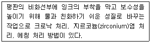
- 노광 (exposure)
- 농담 (gradation)
- 감지화 (sensitization)
- 불감지화(desensitization)
(정답률: 44%)
37. 종이에 고해를 할수록 감소하는 특성은?
- 밀도
- 인열강도
- 인장강도
- 파열강도
(정답률: 50%)
38. 순수 화학펄프만으로 만든 것으로 고급 인쇄 및 필기용지로 주로 사용되며 속칭 모조지로 불리는 것은?
- 갱지
- 수초지
- 백상지
- 아트지
(정답률: 44%)
39. 판상의 잉크량을 x라 하고, 종이 또는 롤러에 전이되는 잉크량을 y, 전이율을 ɤ라고 할 때, ɤ에 대한 x,y의 상관관계는?
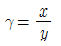
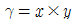
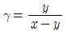
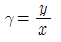
(정답률: 50%)
40. 평판잉크나 볼록판잉크와 같이 비교적 점도가 높은 페이스트잉크의 제조공정 중 연육과정 다음에 하는 공정은?
- 용해
- 조정
- 충진
- 플렉싱
(정답률: 50%)
3과목: 특수인쇄학
41. 폴리에스테르 망사와 비교한 나일론 망사의 특징으로 옳지 않은 것은?
- 내마모율이 우수하다.
- 장시간 많은 양의 인쇄에 적합하다.
- 균일하지 않은 표면에 인쇄하고 할 때 적합하다.
- 망사의 늘어남이 적어 정밀도가 특히 요구되는 경우에 적합하다.
(정답률: 30%)
42. 그라비어 인쇄 시 용제형 잉크보다 수성잉크를 사용할 경우의 장점이 아닌 것은?
- 건조 속도가 빨라진다.
- 작업 환경이 개선된다.
- 화재 위험성이 적어진다.
- 폭발의 위험성이 적어진다.
(정답률: 45%)
43. 플렉소 인쇄(flexography)에 대한 설명으로 옳지 않은 것은?
- 복제판을 비교적 간단히 만들 수 있다.
- 유동성이 풍부한 속건성 잉크를 사용한다.
- 잉크 농도가 풍부한 오목판 인쇄 방법이다.
- 인쇄기는 주행 방향에 따라 스톡형, 드럼형, 인라인형으로 나뉜다.
(정답률: 50%)
44. OCR과 OMR 잉크의 드롭아웃 컬러(drop out color) 조건이 아닌 것은?
- 판독이 되는 색상일 것
- 비판독부 잉크색은 반사율이 낮을 것
- 광학적 판독기의 특정한 고유파장을 잃지 않아야 할 것
- 판독부 잉크색과 비판독부 잉크색의 분광 반사율이 70%이상 차이가 있어야 할 것
(정답률: 39%)
45. 그라비어 인쇄 시 주행 용지의 느슨함이나 겹침 등을 방지하기 위하여 사용되는 기구는?
- 댄싱 롤러
- 사이드 레이
- 자동 페이스터
- 자동 마진 컨트롤 장치
(정답률: 62%)
46. 스크린 인쇄에서 망사의 굵기가 동일할 때 잉크 전이량이 가장 많은 스크린 선수는?
- 100mesh
- 200mesh
- 270mesh
- 300mesh
(정답률: 56%)
47. 다음과 같은 조건일 때 적정 빛쬠시간은?
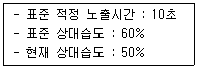
- 7.5초
- 13초
- 10.7초
- 10초
(정답률: 53%)
48. 가전제품, 광학제품, 일용품 등 여러 가지 제품에 명칭, 성능 등을 나타내기 위하여 사용되는 인쇄를 무엇이라 하는가?
- 플렉소 인쇄
- 유리 인쇄
- 명판 인쇄
- 정전 인쇄
(정답률: 53%)
49. 유리인쇄와 관련된 내용으로 옳지 않은 것은?
- 속건성 잉크를 사용하여 피막의 고착성이 좋다.
- 인쇄기는 평면 또는 곡면 스크린 인쇄기를 사용한다.
- 유리 표면에 직접 인쇄하여 800℃이상에서 소성한다.
- 잉크는 유리질 안료와 스퀴지오일로 구성되어 있다.
(정답률: 60%)
50. 컨벤셔널 그라비어 (conventional gravure) 방식의 특징이 아닌 것은?
- 카본 티슈(carbon tissue)를 사용한다.
- 화학적 부식방법으로서 공정 수가 많다.
- 농담 재현을 잉크 홈(cell)의 깊이 변화로 나타낸다.
- 전자 조각으로 농담 재현이 안정되고 임의의 계조 제작이 가능하다.
(정답률: 37%)
51. 스크린인쇄기의 형식에 따른 분류 중 연속형 인쇄기에 속하지 않는 것은?
- 실린더 인쇄기
- 반자동 인쇄기
- 반자동 주행식 인쇄기
- 전자동 주행식 인쇄기
(정답률: 43%)
52. 도전용 잉크의 페이스트의 종류 중 고온 소성형이 아닌 것은?
- 도체용 페이스트
- 저항용 페이스트
- 보호용 페이스트
- 가열경화형 페이스트
(정답률: 58%)
53. 일반적인 금속인쇄 잉크의 건조온도와 건조시간으로 옳은 것은?
- 130 ~ 135℃에서 8~10분
- 210 ~ 240℃에서 8~10분
- 250 ~ 280℃에서 10~15분
- 280 ~ 340℃에서 10~15분
(정답률: 48%)
54. 플렉소 인쇄의 망점촬영 시 아닐록스 롤러의 각도와 스크린 각도가 같을 경우 발생하는 주요 현상은?
- 무아레(morie)
- 얼룩(mottling)
- 뒤묻음(set-off)
- 스크리닝(screening)
(정답률: 58%)
55. 지기 인쇄 시 색조가 안정되고, 덧인쇄(over print)를 할 수 있으며 생산속도가 빠른 인쇄방식은?
- 오프셋 인쇄
- 플렉소 인쇄
- 스크린 인쇄
- 그라비어 인쇄
(정답률: 38%)
56. 스크린사의 일반적인 견장도로 옳은 것은?
- 견(실크)사 : 3~5kg/cm2
- 나일론 망사 : 10~13kg/cm2
- 스테인리스망사 : 7~9kg/cm2
- 폴리에스테르망사 : 8~10kg/cm2
(정답률: 48%)
57. 화상을 형성시키려는 종이 뒤에 전기장을 주고 노즐로 잉크를 분사시키면 전기장에 의해 종이에 문자나 화상이 기록되는 인쇄방식은?
- bar corde printing
- ink jet printing
- OMR printing
- spot carbonizing printing
(정답률: 53%)
58. 금속실린더 표면에 홈을 파고 니켈에 크롬도금을 한 아닐록스 롤러의 종류가 아닌 것은?
- 격자형(Q)
- 직선형(S)
- 피라미드형(P)
- 사선형(R)
(정답률: 48%)
59. 다음 액정인쇄 잉크의 성분 중 바인더의 재료가 아닌 것은?
- 젤라틴
- 아크릴아미드
- 폴리비닐알코올
- 수성알키드수지
(정답률: 53%)
60. 라미네이팅(접합) 합판을 만들어 나뭇결 무늬를 인쇄할 경우 가장 적합한 인쇄 방법은?
- 탐폰 인쇄
- 전사 인쇄
- 그라비어 인쇄
- 잉크젯 인쇄
(정답률: 53%)
4과목: 인쇄색채학
61. 감법혼색에 대한 설명으로 옳지 않은 것은?
- cyan, magenta, yellow의 3색 색료혼합이다.
- 감색혼합, 감법혼합, 색료혼합이라고도 한다.
- 감법혼색의 용도는 원색인색의 색분해, 스포트라이트, 기타 조명 등에 사용된다.
- 혼합하면 할수록 명도와 채도가 저하되며, 보색의 혼합은 검정색에 가까워진다.
(정답률: 39%)
62. 색의 3속성에 속하지 않는 것은?
- 색상
- 명도
- 채도
- 입체색
(정답률: 50%)
63. 다음 오스트발트 색체계의 색체표기 중 등흑색계열(isotones)끼리 연결된 것이 아닌 것은? (단, 등색상삼각형의 기호체계는 아래와 같다.)
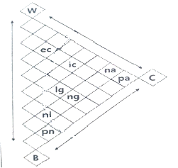
- ec-ic
- lg-ng
- pn-nl
- na-pa
(정답률: 45%)
64. 다음( )안에 들어갈 알맞은 용어는?
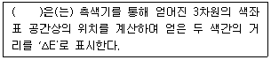
- 색수차
- 구면수차
- 색채오차
- 구레이스케일
(정답률: 50%)
65. 색의 직접적인 동시혼합이 아닌, 주변의 환경적 요인에 따라 실제로 혼합된 것처럼 보이는 시각적인 색 혼합은?
- 가법혼합
- 중간혼합
- 감법혼합
- 회전혼합
(정답률: 56%)
66. XYZ 표색계가 양적인 표시로 색채느낌을 알기 어렵고 밝기의 정도를 판단할 수 없는 단점을 함수 수식을 변환하여 보완한 CIE표색계는?
- NCS 표색계
- Yxy 표색계
- L*a*b 표색계
- LUX 표색계
(정답률: 30%)
67. 밝기가 다른 두 색을 대비시켰을 때 어두운 색과 대비된 밝은 색이 더 밝게 느껴지고, 어두운 색은 더 어둡게 느껴지는 현상은?
- 동시대비
- 색상대비
- 명도대비
- 연변대비
(정답률: 56%)
68. 분광반사율이나 투과율이 달라도 특정 조명광 아래에서는 같은 색으로 보이는 현상은?
- 색지각
- 분광감도
- 컬러밸런스
- 메타메리즘
(정답률: 56%)
69. 색상 5R, 명도 3, 채도 8일 경우 먼셀 색채표기법으로 옳은 것은?
- 5R 3/8
- 5R 8/3
- 8-3-5R
- 5R-8-3
(정답률: 58%)
70. 다음 중 직사 태양광으로 조명되는 물체색을 표시할 경우에 사용하는 것은?
- 표준광 A
- 표준광 B
- 표준광 C
- 표준광
(정답률: 56%)
71. 다음 색의 혼합 중 옳지 않은 것은?
- Cyan + Yellow = Blue
- Green + Blue = Cyan
- Blue + Red = Magenta
- Magenta + Yellow = Red
(정답률: 56%)
72. Process 잉크의 3원색이 아닌 것은?
- Cyan
- Green
- Yellow
- Magenta
(정답률: 56%)
73. 영 헬렘홀츠(Young-Helmholtz)색각설에서 원색이 아닌 것은?
- 더 이상 분광할 수 없는 색
- Yellow, Magenta, Cyan의 3색
- 다른 색광을 혼합하여 만들 수 없는 색
- 원색을 모두 혼합하였을 때 백색광이 되는 색
(정답률: 45%)
74. 색의 3속성 양을 측정하는 측색기구 중 고감도의 실리콘 포토셀(Photo Cell)을 사용하는 삼자극치 색채 분석기기는?
- 크로마미터(Chromameter)
- 덴시토미터(Densitometer)
- 스펙트로포토미터(Spectrophotometer)
- 스펙트로라디오미터(Spectroradiometer)
(정답률: 53%)
75. 낮에는 빨간색 꽃이 잘보이다가 밤이 되면 파란색 꽃이 더 잘보이는 것처럼 광수용기의 민감도 변화에 따라 다른 결과가 나타나는 것을 무엇이라 하는가?
- 잔상(After image)
- 애브니 효과(Abney's effect)
- 색의 항상성(Color inconstancy)
- 푸르킨예 현상(Purkinje shift)
(정답률: 58%)
76. 절대분광반사율을 구하는 식으로 옳은 것은? (단, R : 시료의 절대분광반사율, S : 시료의 측정 signal, B: base line calibratrion factor, W : 백색표준의 절대분광반사율 값이다.)
- R(λ) = S(λ) x B(λ) x W(λ)
- R(λ) = S(λ) x [B(λ) + W(λ)]
- R(λ) = S(λ) x [B(λ) - W(λ)]
- R(λ) = S(λ) x B(λ) ÷ W(λ)
(정답률: 50%)
77. 색광의 분광분포에 있어 파란색(Blue)광의 에너지 분포가 상대적으로 가장 높은 파장범위는?
- 300 ~ 350nm
- 450~500nm
- 550 ~ 600nm
- 650 ~ 700nm
(정답률: 45%)
78. 색상환에서 서루 마주보고 있는 색상들의 관계는?
- 보색
- 혼색
- 입체색
- 유사색
(정답률: 56%)
79. 채도에 관한 설명으로 옳지 않은 것은?
- 색의 3속성 중 하나이다.
- 색의 강약을 나타내는 성질이라고 할 수 있다.
- 색상에 무채색의 포함량이 많을수록 채도는 높아진다.
- 한 색상 중에서도 채도가 가장 높은 색을 순색이라고 한다.
(정답률: 48%)
80. 백색량(W), 흑색량(B), 순색량(C)의 합을 100%로 한 표색계는?
- 먼셀 포색계
- PCCS표색계
- CIE XYZ 표색계
- 오스트발트 표색계
(정답률: 50%)
5과목: 인쇄작업론 및 품질관리
81. 평판 매엽식 오프셋 인쇄기의 구조에 해당되지 않는 것은?
- 급지 장치
- 인쇄 장치
- 축임물 장치
- 종이 연결 장치
(정답률: 44%)
82. 피 인쇄체의 공급장치와 배출장치를 갖추고 있으며 잉크 건조장치가 연동하는 스크린 인쇄기는?
- 수동 스크린인쇄기
- 자동 스크린인쇄기
- 반자동 스크린인쇄기
- 스택형 스크린인쇄기
(정답률: 40%)
83. 인쇄 품질 관리 도구 중 망점 넓이 변화와 농도를 육안으로 확인, 점검할 수 있는 것은?
- 시퀀서(sequencer)
- 스타 타깃(star target)
- 빛쬠 스케일(step guide)
- 도트 게인 스케일(dot gain scale)
(정답률: 56%)
84. 오프셋 윤전인쇄기에서 코킹(cocking)장치는 어떠한 기구인가?
- 잉크냄 기구
- 판통 장착기구
- 블랭킷 장착기구
- 가늠맞춤 조절기구
(정답률: 48%)
85. 삼각판(former)과 절단통의 중간에서 삼각판으로 둘로 접은 두루마리를 양쪽으로 눌러 절단부에 보내는 장치는?
- 초퍼(chopper)
- 슬리터(slitter)
- 접지통(folding cylinder)
- 니핑 롤러(nipping roller)
(정답률: 58%)
86. 지름이 큰 압통 주위에 지름이 1/2 또는 1/4의 2조 또는 4조의 판통, 고무통을 배치하고, 편면 2색 또는 4색 인쇄를 하는 기계형식은?
- 드럼(drum)형
- 인라인(inline)형
- 2색 양면 인쇄형
- 스플릿 드럼(split-drum)형
(정답률: 60%)
87. 트루 롤링(true rolling)패킹법에 대한설명으로 옳지 않은 것은?
- 판통의 지름을 블랭킷통의 지름보다 크게 패킹하여 판의 표면이 베어러 표면보다 높게 한다.
- 판통과 블랭킷통의 표면 속도가 두 실린더의 닙(nip)입구에서 같아지도록 하느 패킹방법이다.
- 비압축성 블랭킷에서 발생하는 벌지(bulge)현상으로 인한 인쇄면에서의 미끄러짐을 고려한 패킹방법이다.
- 판통과 블랭킷통의 접촉 닙(nip)에서 인압만큼 블랭킷통의 순간 지름이 줄어드는 효과를 고려한 패킹방법이다.
(정답률: 36%)
88. 달그렌(Dahlgren)식 축임방식과 관련된 내용으로 옳지 않은 것은?
- 축임물의 표면 장력이 떨어져 확산성이 조성되어 급수량 조절이 쉽게 된다.
- 잉크 묻힘 롤러 1개가 물 롤러를 겸하고 있기 때문에 고스트가 발생하기 쉽다.
- 판의 비화선부에 형성되는 물막이 두꺼워 잉크 유화 현상 발생 및 잉크건조속도가 느린 단점이 있다.
- 축임 롤러에 몰톤이나 슬리브를 사용하지 않으므로 롤러 조절이 정확히 되고 급수량 조절에 대하여 응답이 빠르다.
(정답률: 45%)
89. 인쇄물의 품질관리를 위한 스케일 중에서 망판의 하이라이트에서 중간조를 거쳐 섀도우에 이르기까지 망점의 크기를 망점면적률(%)로 하여 단계적으로 표시한 스케일은?
- 스타 타깃(star target)
- 컬러 패치(color patch)
- 그라데이션 스케일(gradation scale)
- 도트게인 스케일(dot gain scale)
(정답률: 56%)
90. 평판 오프셋 윤전 인쇄기 중 한 개의 블랭킷 실린더가 인접한 다른 한 개의 블랭킷 실린더의 압통을 대신하는 양면인쇄기의 유형은?
- B - I 형
- B - B형
- 유닛(Unit)형
- 공통 압통형
(정답률: 64%)
91. 빠른 속도로 종이 받이 판에 쌓이는 종이의 윗면이 자동적으로 하강하는 기구로 구성되어 있는 배지장치의 방식은?
- 체인식
- 파일식
- 벨트식
- 기어식
(정답률: 60%)
92. 베어러의 지름이 450mm이고 실린더의 지름이 440mm일 때 언더컷은 몇 mm인가?
- 5
- 6
- 7
- 8
(정답률: 65%)
93. 오프셋 인쇄기의 블랭킷통의 주된 역할은?
- 뒷묻음 예방
- 화선 위치 조정
- 잉크 광택 강화
- 화선부 잉크전이
(정답률: 56%)
94. 평판 오프셋 윤전기에서 두루마리 요지의 진행 방향을 바꾸는 여가를 하는 금속성 방향 전환봉을 무엇이라 하는가?
- 포머(former)
- 슬리터(sliter)
- 터닝바(turning bar)
- 미터링 롤러(metering roller)
(정답률: 62%)
95. 지면을 구성하는 레이아웃 작업 중 편집자가 고려해야 할 사항과 거리가 먼 것은?
- 기획의도 및 편집 방침이 원고의 내용과 잘 맞는가?
- 독자들에게 시각적으로 편안함을 줄 수 있는가?
- 독자들에게 내용이나 이미지를 효과적으로 전달할 수 있는가?
- 제판 작업자가 판면에 적합한 감광재료를 선택할 수 있는가?
(정답률: 58%)
96. 낱장 인쇄기와 비교한 두루마리 윤전인쇄기의 장점이 아닌 것은?
- 인쇄 속도가 빠르다.
- 대량 생산에 적합하다.
- 인쇄기의 구조가 간단하다.
- 재단과정이 없어 용지 비용이 저렴하다.
(정답률: 58%)
97. 그라비어 인쇄기에서 그라비어 실린더의 비화선부에 묻은 잉크를 제거해 주는 역할을 하는 장치는?
- 압통(impression cylinder)
- 독터 블레이드(doctor blade)
- 아닐록스 롤러(anilox roller)
- 스캐닝 실린더(scanning cylinder)
(정답률: 62%)
98. 저작권 법상 저작재산권의 보호기간으로 옳은 것은? (단, 공동저작물 및 무명인의 저작재산권의 경우는 제외한다.)
- 저작자가 생존하는 동안과 사망한 후 40년간
- 저작자가 생존하는 동안과 사망한 후 50년간
- 저작자가 생존하는 동안과 사망한 후 60년간
- 저작자가 생존하는 동안과 사망한 후 70년간
(정답률: 56%)
99. 그라비어 백업(back up)롤러의 주된 역할에 대하여 옳은 것은?
- 압통에 압력을 보강하여 주는 역할
- 인쇄기의 조작을 원활하게 하는 역할
- 판통의 상하, 좌우 흔들림을 방지하는 역할
- 두루마리 용지의 좌우 불균형을 조절하는 역할
(정답률: 56%)
100. 플렉소그래피 인쇄기 중 한 개의 커다란 압통 주위에 4~8개의 인쇄유닛을 배치한 유형은?
- 스택형(stack type)
- 인라인형(in-line type)
- 피라미드형(pyramid type)
- CI형(common impression type)
(정답률: 53%)